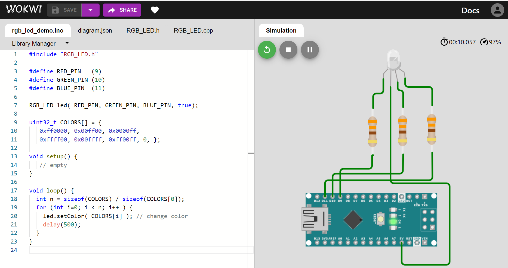

ตัวอย่างการสร้างคลาส C++ เพื่อใช้งานสำหรับ Arduino: RGB LED#
Keywords: Arduino, AVR, Object-Oriented Programming, User-defined C++ Class, RGB LED, PWM-based LED Dimming
▷ การสร้างคลาสและการแก้ปัญหาด้วยการเขียนโปรแกรมเชิงวัตถุ#
Arduino ใช้ภาษา C++ ("ซี-พลัส-พลัส") ในการเขียนโปรแกรมซึ่งเป็นภาษาเชิงวัตถุ (Object-oriented Programming Language: OOP) ทำให้มีความสะดวกในการใช้งานต่อผู้ใช้ นอกจากนั้นถ้ามีการสร้างเป็นคลาส (Class) เพื่อนำไปใช้งานในรูปแบบของไลบรารี (Library) ก็สามารถแชร์ให้ผู้อื่นใช้ได้ เช่น แชร์ไว้ใน Github เป็นต้น หรือนำไปใช้ในโปรเจกต์อื่นต่อได้ (Code Reuse) ข้อดีดังกล่าวคงเป็นสาเหตุหนึ่งที่ทำให้ Arduino เป็นที่นิยมแพร่หลาย ง่ายต่อการเรียนรู้และนำไปประยุกต์ใช้งาน
บทความนี้กล่าวถึงวิธีการสร้างคลาสในภาษา C++ สำหรับใช้งานร่วมกับ Arduino เช่น การสร้างคลาสที่เป็นตัวควบคุมการปรับสีของ หลอดไฟ RGB LED ซึ่งใช้เทคนิคสร้างสัญญาณแบบ PWM (Pulse Width Modulation)
รูป: ตัวอย่างคลื่นสัญญาณ PWM ที่มีค่า Duty Cycle แตกต่างกัน (Source: Arduino.cc)
▷ การสร้างคลาสและการแก้ปัญหาด้วยการเขียนโปรแกรมเชิงวัตถุ#
การสร้างคลาสในภาษา C++ สำหรับ Arduino ให้ถูกต้องและมีประสิทธิภาพ ก็ต้องอาศัยความรู้ความเข้าใจภาษา C++ ที่ดีพอ รวมถึงเข้าใจการทำงานของ Arduino และอื่นๆ ในเชิงฮาร์ดแวร์ อย่างไรก็ตามการเรียนรู้จากตัวอย่างที่ไม่ซับซ้อนจนเกินไป ก็น่าจะเป็นการเริ่มต้นที่ดีวิธีหนึ่ง
ก่อนที่จะสร้างคลาสและเขียนโค้ดในภาษา C++ ลองมาพิจารณโจทย์ในการเขียนโปรแกรม สิ่งที่ต้องการคือ คลาสที่ใช้ในการควบคุมหรือปรับสีของ RGB LED หนึ่งดวง โดยตั้งชื่อคลาสเป็น RGB_LED ถ้าสร้างอ็อบเจกต์ (Object) จากคลาสดังกล่าว ก็จะใช้ได้กับ RGB LED ต่อหนึ่งดวง
ในการควบคุมและปรับสี จะต้องใช้ขาสัญญาณจำนวน 3 ขา สำหรับสีแดง (Red) สีเขียว (Green) และ สีน้ำเงิน (Blue) และเป็นสัญญาณแบบ PWM ที่มีความถี่หรือคาบสัญญาณคงที่ แต่ปรับค่า Duty Cycle (ความกว้างของช่วงที่เป็น High ในแต่ละคาบ) ของสัญญาณได้ในช่วง 0..255 (ความละเอียดขนาด 8 บิต) และในการสร้างสัญญาณ PWM ในลักษณะนี้ จะใช้คำสั่งหรือฟังก์ชัน analogWrite() ของ Arduino API
การเขียนโปรแกรมเชิงวัตถุ จะเกี่ยวข้องกับการสร้างคลาส และการสร้างออปเจคเพื่อใช้งาน สิ่งแรกที่คลาสต้องมีคือ "คอนสตรักเตอร์" (Constructor) ซึ่งเป็นฟังก์ชัน หรืออาจเรียกว่า "เมธอด" (Method) ที่มีชื่อเหมือนชื่อคลาส และจะถูกเรียกเมื่อสร้างอ็อบเจกต์จากคลาส
คอนสตรักเตอร์ทำหน้าที่กำหนดค่าเริ่มต้นการทำงานของอ็อบเจกต์ดังกล่าว และสามารถมีอาร์กิวเมนต์ (Arguments) หรืออาจจะไม่มีก็ได้ เพื่อรับค่ามาใช้กำหนดค่าต่างๆ ที่อ็อบเจกต์จะต้องใช้หรือเก็บไว้ภายใน ในกรณีของคลาส RGB_LED จะต้องมีการกำหนดหมายเลขขา GPIO ของ Arduino สำหรับสัญญาณ PWM
และการกลับลอจิก (Logic Inverting) ของสัญญาณดังกล่าวเพื่อรองรับการใช้งานแบบ Common Anode และCommon Cathode ของโมดูลRGB LED
สำหรับพฤติกรรมและคุณสมบัติภายในของแต่ละอ็อบเจกต์ ก็ถูกกำหนดโดยเมธอดสมาชิก (Member Methods) และตัวแปรสมาชิกของอ็อบเจกต์ (Member Variables) เช่น ตัวแปรสำหรับเก็บหมายเลขขาสัญญาณ PWM จำนวน 3 ขา ตัวแปรสำหรับเก็บค่าของทั้งสามสี (R,G,B) เมธอดที่ใช้ในการเปลี่ยนค่าสี และเมธอดที่ใช้อัพเดทเอาต์พุต PWM เมื่อมีการกำหนดค่าสีใหม่ในแต่ละครั้ง เป็นต้น
ในการสร้างคลาสในภาษา C++ จะต้องมีการกำหนดระดับการเข้าถึงสมาชิกภายใน แบ่งได้เป็นสามระดับ เรียงลำดับการเข้าถึงได้มากสุด (เข้าถึงได้ไม่มีข้อจำกัด) ไปจนน้อยสุด (ความเป็นส่วนตัว)
publicprotectedprivate
▷ ตัวอย่างโค้ด Arduino Sketch#
ลองดูมาตัวอย่างโค้ด และเราสามารถเขียนโค้ดลงในไฟล์เดียวได้เหมือน Arduino Sketch (.ino) ตามปรกติ แต่มีการจัดการแบ่งส่วนโค้ดออกเป็น 3 ส่วน คือ ส่วนแรกเป็นการประกาศคลาส (Class Declaration) ส่วนที่สองเป็นการสร้างคลาส (Class Implementation หรือ Class Definition) ตามที่ได้ประกาศไว้ และส่วนที่สามเป็นการเขียนโค้ดเพื่อสาธิตหรือทดสอบการทำงานของคลาสที่ได้สร้างเอาไว้ใช้งาน
ส่วนแรกเป็นการประกาศคลาสชื่อ RGB_LED มีเพียงเมธอดเดียวสำหรับใช้งานเป็น Constructor โดยรับอาร์มิวเมนต์ redPin, greenPin, bluePin ตามชนิดข้อมูลแบบ uint8_t ซึ่งจะใช้กำหนดหมายเลขสำหรับขาเอาต์พุตของ Arduino ที่ต้องใช้งานแบบ PWM ได้ และจะใช้สำหรับขาควบคุมสีแดง เขียว และน้ำเงิน ตามลำดับ
และ inverting ที่มีชนิดข้อมูลเป็น bool เพื่อกำหนดว่า จะกลับลอจิกของสัญญาณเอาต์พุต PWM
หรือไม่ (กรณีที่ใช้กับ RGB LED แบบ Common Anode)
#include <Arduino.h>
#include <inttypes.h>
// This class implements a color controller for a single RGB LED
// that can change its color by adjust the duty cycles of
// three PWM signals used to control that LED.
class RGB_LED {
public:
// class constructor
RGB_LED( uint8_t redPin, uint8_t greenPin, uint8_t bluePin,
bool inverting=false );
// instance member methods
void setColor( uint32_t color ); // set the RGB color
void setColor( uint8_t r, uint8_t g, uint8_t b ); // set the RGB color
private:
// private member method
void update();
// private member fields
uint8_t _pins[3], _rgb[3];
bool _inverting; // inverse the PWM output?
}; // end of class (don't forget the semicolon)
เมธอดอื่นของคลาสนี้ได้แก่
void setColor( uint32_t color )ใช้กำหนดค่าสี 24 บิต โดยที่ 8 บิตแรก (บิตที่ 7..0) สำหรับสีน้ำเงิน 8 บิตถัดไป (บิตที่ 15..8) สำหรับสีเขียว และ 8 บิตถัดไป (บิตที่ 23..16) สำหรับสีแดงvoid setColor( uint8_t r, uint8_t b, uint8_t g )เหมือนคำสั่งแรก แต่มีรายการอาร์กิวเมนต์แตกต่างกัน และใช้กำหนดค่าสีขนาด 8 บิต สำหรับสีแดง เขียว และน้ำเงิน ตามลำดับupdate()เมธอดนี้จะอัปเดตสัญญาณเอาต์พุตให้ตรงกับระดับค่าสีหลังจากที่ได้ทำคำสั่งsetColor()และมีข้อสังเกตว่า เมธอดนี้ถูกกำหนดระดับเข้าถึงเป็นprivateดังนั้นจึงเรียกใช้ได้เฉพาะภายในคลาสเท่านั้น
ในส่วนที่เป็นตัวแปรสมาชิกภายในคลาส (เป็น private ทั้งหมด) ได้แก่
uint8_t _pins[3]เป็นอาร์เรย์ขนาด 3 ไบต์ ที่ใช้เก็บหมายเลขขาuint8_t _rgb[3]เป็นอาร์เรย์ขนาด 3 ไบต์ ที่ใช้เก็บค่าของสามสีตามลำดับ และbool _invertingเป็นตัวแปรเพื่อระบุว่า ให้กลับค่าลอจิกสำหรับสัญญาณเอาต์พุตหรือไม่
ส่วนที่สองเป็นการสร้างคลาสซึ่งเกี่ยวกับการสร้างเมธอดสมาชิกตามที่ได้ประกาศไว้ในส่วนแรก
RGB_LED::RGB_LED( uint8_t redPin, uint8_t greenPin, uint8_t bluePin,
bool inverting )
{
// save the Arduino pins for PWM output
_pins[0] = redPin;
_pins[1] = greenPin;
_pins[2] = bluePin;
_inverting = inverting;
for ( uint8_t i=0; i < 3; i++ ) {
pinMode( _pins[i], OUTPUT ); // use this pin as output
}
setColor( 0, 0, 0 ); // set RGB values to zero (RGB LED off)
}
void RGB_LED::setColor( uint8_t r, uint8_t g, uint8_t b ) {
_rgb[0] = r;
_rgb[1] = g;
_rgb[2] = b;
update();
}
void RGB_LED::setColor( uint32_t color ) {
setColor( (color >> 16) & 0xff,
(color >> 8) & 0xff,
color & 0xff );
}
void RGB_LED::update() {
uint8_t duty_cycle;
for ( uint8_t i=0; i < 3; i++ ) {
duty_cycle = (_inverting) ? (255 - _rgb[i]) : _rgb[i];
analogWrite( _pins[i], duty_cycle );
}
}
ส่วนที่สามเกี่ยวข้องกับการเขียนโค้ดทดสอบ หรือสาธิตการใช้งาน โดยสร้างอ็อบเจกต์จากคลาส RGB_LED
และให้เปลี่ยนสีตามรายการของค่าสีที่ได้กำหนดไว้โดยอาร์เรย์ COLORS[]
#include "RGB_LED.h"
#define RED_PIN (9)
#define GREEN_PIN (10)
#define BLUE_PIN (11)
RGB_LED led( RED_PIN, GREEN_PIN, BLUE_PIN, false );
uint32_t COLORS[] = {
0xff0000, 0x00ff00, 0x0000ff,
0xffff00, 0x00ffff, 0xff00ff, 0xaa8e55, 0, };
void setup() {
// empty
}
void loop() {
int n = sizeof(COLORS) / sizeof(COLORS[0]);
for (int i=0; i < n; i++ ) {
led.setColor( COLORS[i] ); // change color
delay(1000);
}
}
เมื่อได้ทดลองการทำงานแล้ว ก็สามารถนำโค้ดดังกล่าว มาจัดแบ่งเป็นไฟล์ RGB_LED.h สำหรับส่วนที่ประกาศคลาส และ RGB_LED.cpp สำหรับส่วนที่สร้างคลาส
ในการนำไปใช้งาน โค้ด Arduino Sketch ที่จะใช้คลาสดังกล่าว จะต้องนำเข้าไลบรารีโดยทำคำสั่งดังนี้ #include "RGB_LED.h"
หากจำลองการทำงานด้วย WokWi AVR Simulator
โมดูล wokwi-rgb-led มี 4 ขา ดังนี้
| Name | Description |
|---|---|
| R | Red LED |
| G | Green LED |
| B | Blue LED |
| COM | Common pin ("cathode" or "anode") |

รูป: ตัวอย่างการต่อวงจรทดลองเสมือนจริงโดยใช้ WokWi AVR Simulator (RGB LED - Common Anode) สังเกตว่า ขา COM จะต่อกับ VCC
รูป: ตัวอย่างการต่อวงจรทดลองเสมือนจริงโดยใช้ WokWi AVR Simulator (RGB LED - Common Cathode) สังเกตว่า ขา COM จะต่อกับ GND
รูป: ตรวจสอบการกำหนดค่าของอุปกรณ์ในไฟล์ diagram.json ใน WokWi AVR Simulator
สำหรับ wokwi_rgb_led ในส่วนที่เป็น attrs เช่น กำหนดค่าสำหรับcommon เป็น anode หรือ cathode
ในตรงกับการต่อวงจรจริง
รูป: คอมไพล์โค้ดตัวอย่างโดยใช้ Arduino IDE
รูป: ทดลองต่อวงจรจริงโดยใช้โมดูล RGB LED แแบบ Common Anode (CA) และบอร์ด Arduino Nano v3
▷ แหล่งข้อมูลสำหรับศึกษาเพิ่มเติม#
- "Writing a Library for Arduino"
- "Arduino Style Guide for Creating Libraries"
- "How to write libraries for the Arduino"
- "Secrets of Arduino PWM"
▷ กล่าวสรุป#
บทความนี้ได้นำเสนอตัวอย่างการออกแบบและสร้างคลาสในภาษา C++ ในเบื้องต้น เพื่อนำไปใช้งานกับบอร์ด Arduino โดยได้เลือกโมดูล RGB LED มาเป็นตัวอย่างในการสร้างคลาส และทดลองใช้งาน
This work is licensed under a Creative Commons Attribution-ShareAlike 4.0 International License.
Created: 2022-02-19 | Last Revision: 2022-09-29